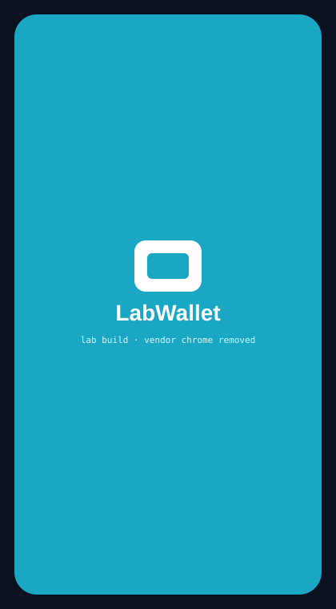
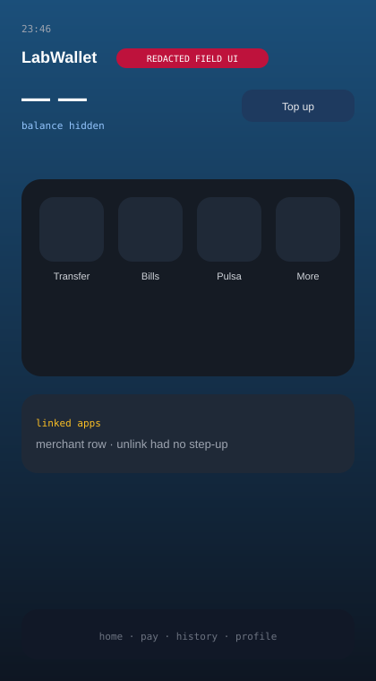
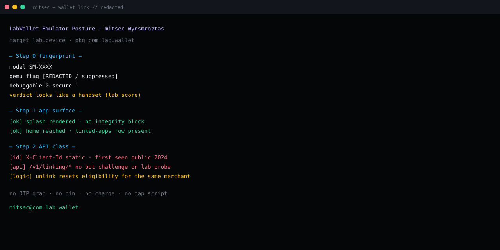

A static PIN client id plus an unlink that resets merchant eligibility.
Public-artifact review + lab posture on an authorized emulator session. No charge.
Client id accepted (not 401). Linking probes had no bot challenge. App ran on a spoofed handset fingerprint.
Rotate the id. Bind sessions. Persist pay-state across unlink. Step-up on unlink.
Summary
Lab wallet com.lab.wallet talks to api.lab.wallet.test for third-party merchant linking. A static X-Client-Id has been sitting in public artifacts since 2024. Linking routes answered lab probes without a bot challenge. Unlinking a merchant reset whatever flag the wallet used for “already paid this service.” The Android client accepted a spoofed handset fingerprint and showed its home surface with no integrity block.
This page is the class, not the kit. No PIN, no OTP path, no charge call, no coordinate list.
Lab frames
Rebuilt from the session. Branding, balance and merchant tiles removed.



Four findings, one wallet
1. Static PIN client id
PIN-token mint used a header X-Client-Id that is not per-user and not per-session. The same literal appears in more than one public artifact. A lab probe that sent the id and omitted the PIN body came back as a field-validation error — not 401 / invalid_client. The id is treated as a known client, not as a secret that failed.
POST api.lab.wallet.test/v1/users/pin/tokens/nb X-Client-Id: [REDACTED · static · public since 2024] → 200 field cannot be blank not 401 · id accepted, body incomplete mitsec@com.lab.wallet:
2. Linking API without a bot gate
Consent / validate-reference style routes on the linking host answered. There was no CAPTCHA, no device-bound assertion, no session cookie required for the probe to be parsed. Rate limit, if any, was not visible at the single-call layer. This page does not replay the six-step merchant charge.
3. Unlink resets eligibility
After a merchant link, the in-app “linked apps” row could drop the merchant. The next link treated the wallet as clean for that merchant again. No step-up (PIN / biometric) sat on the unlink confirm in the lab build. That is a state machine bug, not a tap recipe.
4. Emulator posture
The lab runtime presented a mid-range Samsung model string, user build, debuggable=0, secure=1, empty qemu flag. A twelve-check fingerprint scorer on that session printed “handset.” com.lab.wallet drew splash and home. No integrity interstitial. AndroScope logs the posture. It does not publish the ADB input sequence.
What this is not
- Not a PIN oracle. Challenge format and PIN values stay off-site.
- Not an OTP intercept note. Channels used to read messages are not described.
- Not a charge cookbook. Snap / merchant charge hosts are unnamed.
- Not a dump of third-party account files from public repos.
Impact (class)
A static client id plus an unlink-reset means one authorized wallet can be driven through the same merchant link more than the product intended. Bot-empty linking means the drive does not need a human at each step. Emulator-blind UI means the drive can sit off a physical handset. Money movement is a program issue; this page stops at the four controls that failed.
Fix
- Rotate the PIN client id. Stop accepting a static header. Bind a short-lived, per-session assertion.
- Audit logs for that id since 2024.
- Bot / device signal on every
/v1/linking/*route. Rate-limit OTP triggers per MSISDN, not per TCP socket. - Persist “this MSISDN already completed merchant Y” across unlink.
- Step-up on unlink of a payment-authorized merchant.
- Refuse the client on emulator / spoofed integrity. Play Integrity (or the vendor equivalent) on splash, not only on first open.
Lab frame
Android 12 class image, authorized session, 2026-05-29. Static review of public artifacts plus passive probes. No live payment, no third-party mailbox, no customer PIN.